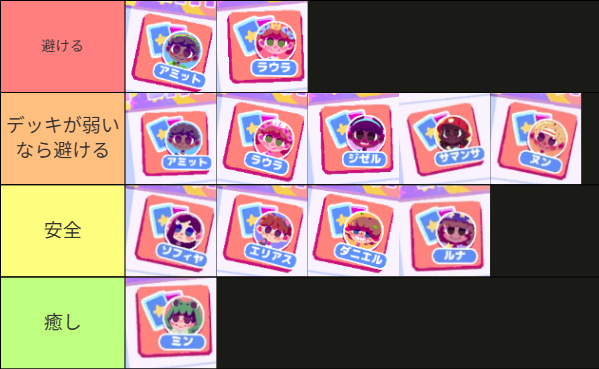
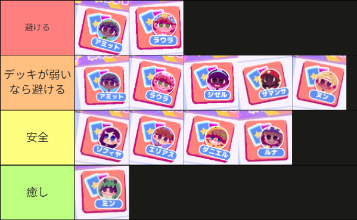

タイトル
導入文（要約） — ここに本文を書きます。
見出し
段落の例
- 箇条書き項目1
- 箇条書き項目2
画像挿入例:

数式例: インライン \(E=mc^2\)、ディスプレイ \[x = \frac{-b \pm \sqrt{b^2-4ac}}{2a}\]
タグ: #タグ1 #タグ2
段落の例
画像挿入例:

数式例: インライン \(E=mc^2\)、ディスプレイ \[x = \frac{-b \pm \sqrt{b^2-4ac}}{2a}\]
タグ: #タグ1 #タグ2